Activity: Dimension a model
Overview
This activity demonstrates the process of applying dimensions to define and control a model.
Click here to download the activity file.

Objectives
Use some of the dimensioning commands on an existing part.
In this activity you will:
Place linear and radial dimensions.
Modify these dimensions and observe how the model changes.
Use virtual vertices to define dimensions.
If you are using Internet Explorer and a video is not displaying in your training guide, click the Tools tab (or gear icon)→Compatibility View settings, and then clear the selection of Display intranet sites in Compatibility View.
Open jaw.par.
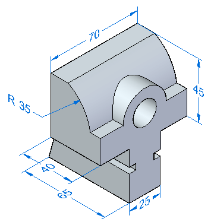
Place dimensions on the 3D part and use them to change the model size. You will learn that dimensions can be placed at any time in the design cycle, and these dimensions control the model.
In PathFinder, turn off the display of the Dimensions collector under PMI.
In the next step you will place radial dimensions. The concentric circular faces (shown in red) are detected by Solid Edge as offset faces. The system tries to maintain the offset distance between these faces. There is a Design Intent rule called Offset. You will turn this rule off.
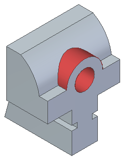
Place a diameter dimension on the bore.
On the Design Intent panel, clear the Offset rule (1).
Change the value to 20 and press the Enter key.
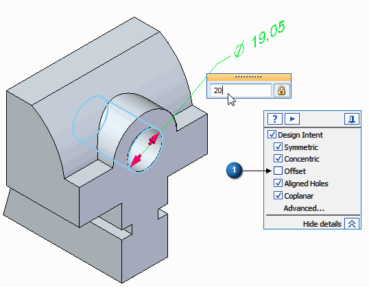
Place a radius dimension on the saddle surface and change the value to 25 mm.
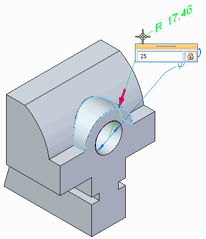
Select Distance Between to place a dimension representing the overall height of the part.
On Command Bar, click the Lock Dimension Plane option
 .
.Use QuickPick to select the dimension plane shown.
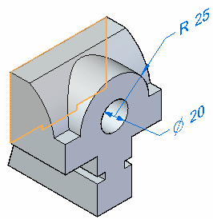
Click edge (1) and then click edge (2).
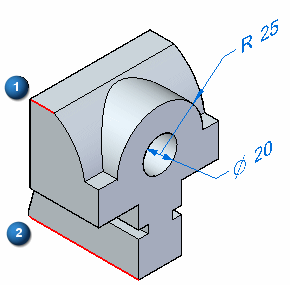
Change the dimension value to 86 mm. Ensure that the direction arrow points upward.
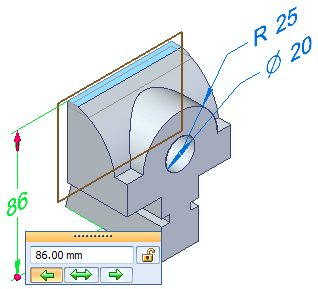
Press the F3 key to unlock the dimension plane.
Press the F5 key to refresh the screen to clear the display of the dimension plane.
Save and close this file.
Open jaw_rounds.par. It is similar to the part in the previous activity. The file includes rounds.
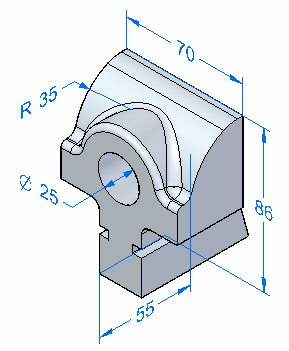
Press Ctrl+F to change to a front view.
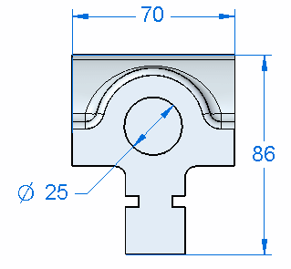
Use PathFinder to hide the dimensions.
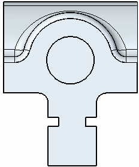
Place a Distance Between dimension from the bottom edge to the underside edge as shown below. Change the value to 40 mm.
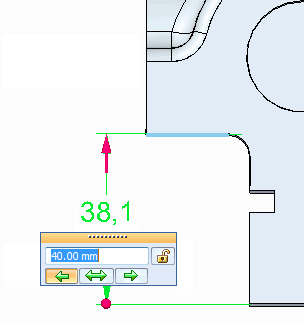
While still in the Dimension Between command, select the round to dimension to the center of the round.
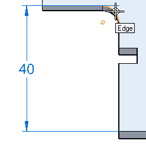
You can see that the dimension is attached to a virtual center of the round.
Place the dimension.
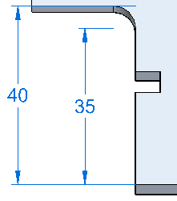
Save and close this file.
In this activity you placed dimensions on the 3D model. These dimensions can be used to control the model shape. You also learned how to dimension to an intersection using a virtual vertex.
Click the Close button in the upper–right corner of this activity window.